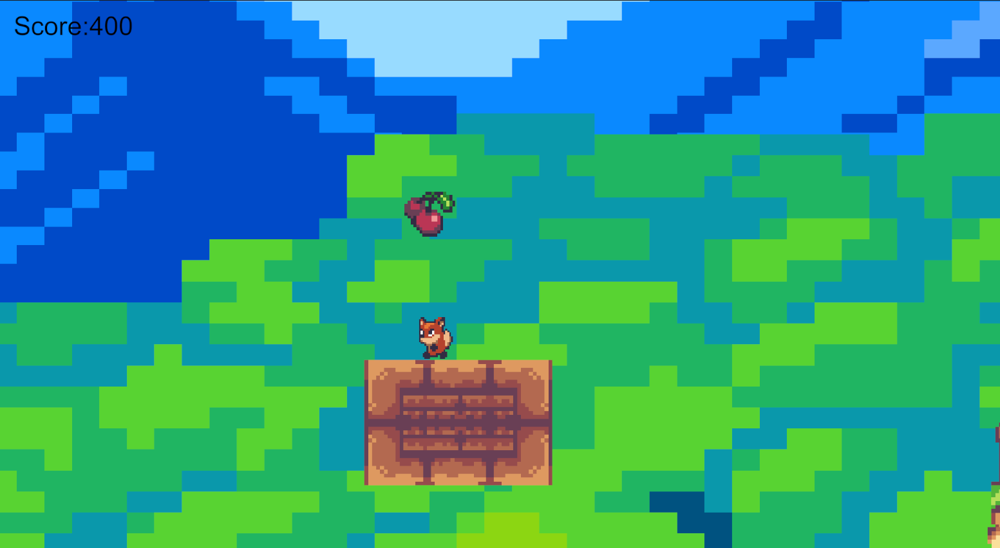
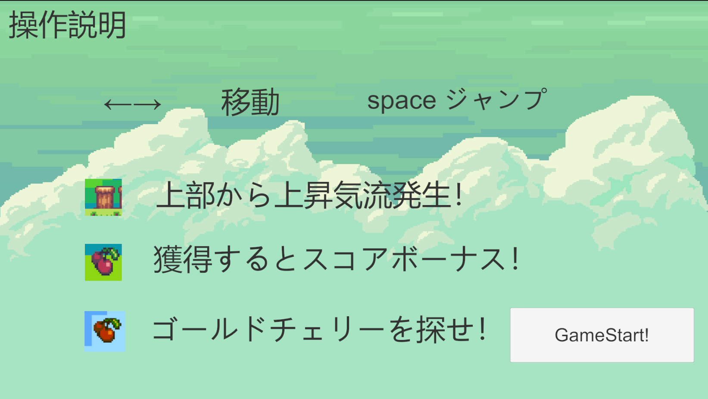
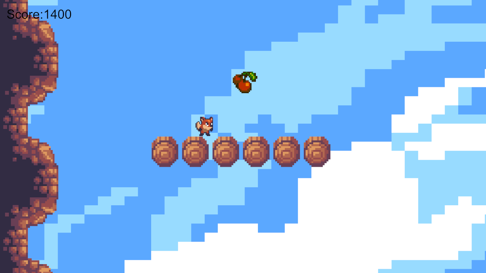

技術スタック
- Unity
- C#
プロジェクト情報
プロジェクト概要
リスが黄金のさくらんぼを求めて冒険する2Dアクションゲーム
ステージには黄金のさくらんぼの他に普通のさくらんぼも散りばめられており、さくらんぼを拾いながら黄金のさくらんぼを探す。
ステージのあちこちにギミックが散りばめられており、ギミックを駆使することで黄金のさくらんぼへとたどり着く。
開発背景
このゲームは、学校の制作課題で作成しました。 2Dアクションというテーマが有り、その中でシンプルかつ簡単な操作感を目指し制作に取り掛かりました。
開発にあたっては、まずゲームの核となる「簡単な操作感」を実現することに注力しました。 ジャンプの高さ、移動速度だけではなくジャンプに浮遊感をもたせアクションゲーム初心者にも操作しやすい設計にしました。
ジャンプに浮遊感をもたせたので横長のステージではなく縦長のステージ設計を行い浮遊感を際立たせ、プレイヤーがミスを修正しやすい配置やギミックを実装し、熟練度の高いプレイヤーに向けて移動床など難易度を少し上げるようなギミックも追加しました。
主な機能
不思議な床
上下に移動したり、下からすり抜けたりをいろいろな床を複数配置
浮遊してショートカット
黄金のさくらんぼまでの道筋に浮遊装置が
浮遊装置を使ってショートカット
スコアランキング
さくらんぼを獲得すると一定のポイントを獲得
獲得したポイントでランキングを生成
スクリーンショット



